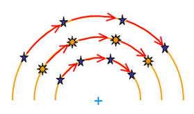
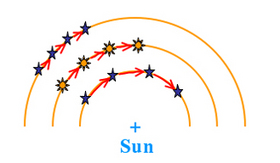
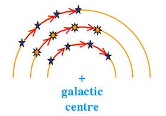

| In a rotating solid body, regions that are adjacent at one point in time will remain adjacent as the body rotates. This means that points further from the rotation centre will travel at greater speeds than those closer in. If the rotating body is not solid, however, regions that are adjacent at one point in time do not necessarily maintain that configuration. This is known as ‘differential rotation’. |

All the points in a rotating solid body maintain their position with respect to each other
|
| Examples of differential rotation are found throughout astronomy. In stars (including the Sun) and the gas giant planets, the equatorial regions rotate faster than regions closer to the poles, meaning that equatorial sunspots and cloud formations will move across the face of the object faster than their polar cousins. |
| In the Solar System, the outer objects feel less of a gravitational pull from the Sun. They must therefore orbit at slower speeds than the inner objects in order to maintain their orbital radius. This is known as Keplerian Rotation and results in the inner objects overtaking and racing ahead of the outer objects. |

Objects further from the Sun feel less gravitational attraction and travel at slower speeds to maintain their orbits
|
| In the disks of spiral galaxies, all of the material orbits at roughly the same speed. However, the outer stars have further to travel in their orbit around the galactic centre than the inner stars. The result is that the outer stars lag behind the stars in the inner reaches of the galaxy.All objects in the disk of a spiral galaxy are moving at roughly the same orbital speed. Since the outer objects have further to travel in their orbits than the inner ones, they lag behind. |

All objects in the disk of a spiral galaxy are moving at roughly the same orbital speed. Since the outer objects have further to travel in their orbits than the inner ones, they lag behind
|